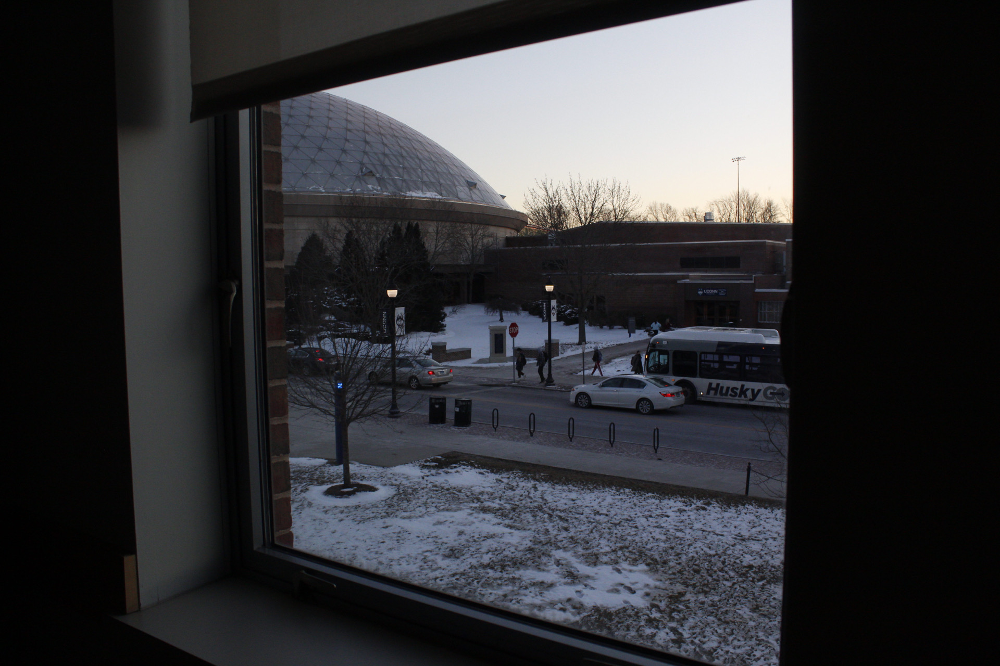

Views from a window
Buildings in downtown Hartford, CT
UConn buildings covered in snow
Selfie being taken through a driver's side mirror
UConn buildings partially covered in snow

Gampel Pavillion seen out of a student union window
Buildings in downtown Hartford, CT
Gazebo seen at West Campus in Storrs, CT
Buildings in downtown Hartford, CT